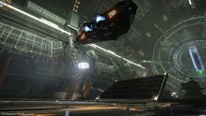

Engalo feels the soft grass under he’s feet, the smell of fresh air fills he’s nose and lungs, the vast vista curving upwards as the habitation ring completes the circle. A feeling of peace and relaxation spread trough Engalo. He sits down on the grass and closes he’s eyes taking in the smell and feeling of it all.
*Beep* Engalo twitches at the abrupt sound. “What?” Again *Beep* Engalo opens he’s eyes and finds himself in a cramped room with stale air. Two tiny windows at the bed. *Beep* Engalo sits up almost banging his head against the sealing over the bed. “Yes?!” Engalo shouts annoyed from being deprived of the good dream. “Open up lad” The known voice of Gaz thunders trough the door. Engalo opens the door by pushing the green button at the left side of the door. “I dreamt I was back at M.Gorbachev” Engalo taking a long irritated look at Gaz. Gaz stopped for a second looking back at Engalo. “Daydreaming in the habitation ring I imagine… As you always did” Gaz smiles. “There is no time for daydreaming now lad, I have to leave today” Engalo walks back in to the room and sits down at a small table. An half empty bottle of Eranin Pearl Whisky stands on the table with a single glass next to it. Engalo fills the bottom of the glass and offers it to Gaz. Gaz sits down on the opposite side of the table accepting the glass of whisky. “Do you and that lass have a plan?” Engalo takes a sip from the whisky bottle. “I have no idea… We met with some people and she asked only one question: Is it done? They answered: Yes. and that was it” Engalo takes another sip from the bottle. “Jennifer told me to wait here, and that’s what I have done for almost two days now” Engalo smacks the bottle down with a bang. “I hate this waiting, sitting around… If it where anyone else telling me to trust this girl other than Cyraios, I would be long gone by now” Gaz empties the glass. “Cyraios knows who to trust and what to do. It will cost you in the end for he’s help, but he always follow through” Gaz laughs “He will have you running errands all over the bubble after this one tho’ ” Engalo smiles. “You are probably right” Gaz stands up. “Come on lad… walk with me to the docking bay”

After a long walk trough the station Engalo says good bye to Gaz and watches he’s ship depart. “Clear skies old friend” Engalo says to himself. Walking back Engalo remembered how they met. It was back at the Academy. Engalo been overly critical to the Federal secrecy politics over the lunch table in the mess hall. Although beaten down by his fellow students at the time, Gaz had approached Engalo afterwards. Gaz had a lot of conspiracy theories. Engalo and Gaz dug for everything they could find to fuel their curiosity, and the mysteries surrounding the Alliance research ship, “Lion” was the focus of theyr efforts. Although no conclusions where made the two young men where full of theories. They kept in contact after the academy although they both started their career and ended up on each side of the bubble. Long discussions about their theories and that they one day should get out there and search for the Lion, usually over several bottles of whisky. Seemed to be a recurring thing when they occasionally met up somewhere. Engalo also remembered Gaz’s wedding. He’s wife Aurora, stunningly beautiful she was. That wedding was the last time Engalo had been to Earth, that’s 19 years ago now. Aurora wanted to stay on Earth after being married to Gaz and following him around the bubble for 8 years. Gaz still visits here but never talks about the status of their relationship. Gaz always find something else to talk about whenever Engalo brings it up.
Back at the cramped quarters Engalo lies back down on the bed. “Back to waiting” he says to himself while closing he’s eyes. Yet again Engalo wakes abruptly by the sound of the door. *Beep* Engalo quickly raises to he’s feet and answers. Outside the door stands Jennifer. “Are you ready?” Engalo looks in to Jennifer’s deep brown eyes. “Are you just going to stand there and ogle at me?” She says harshly. Engalo pulls himself out of the gaze and grabs he’s pre-packed bag and jacket. “Let’s go” Engalo says passing Jennifer in the hallway. “it’s this way dumbass” Jennifer shouts at him laughing. Engalo’s face turns red, luckily Jennifer started walking the other way thus not able to see it. “That’s the first time I have heard here laughing” Engalo thinks as he takes himself looking at Jennifer’s rear end. They walk in to the same bar they had been earlier meeting those two shady *It’s done* characters. They found a table in a corner. “Do you want something?” Jennifer asks looking Engalo up and down as if he’s preference in drink would make up here mind about him. “Whisky” Engalo says looking over to the bar. Jennifer starts walking towards the bar. Walking back she has two glasses of whisky and a two bottles of beer on a serving tray, manoeuvring the tray clearly with some skill. Jennifer sits down. “Only rather cheap whisky here” “That’s alright” Engalo answers. Jennifer looks at Engalo. “It’s about time I properly introduce myself, Jennifer” She holds out here hand. “Engalo here” Engalo says a little bewildered over the sudden kindness from Jennifer. “I had to check up on you, Cyraios just told me to get you on a ship covertly to Shinrarta Dezhra… and that’s no easy task nor something to take lightly”
She takes a sweeping look around before looking back at Engalo. “It’s a pain in the ass getting in to that system unannounced and I wasn’t too happy about it you could probably imagine” Jennifer empties the glass of whiskey “And all this for someone I don’t know, who parked he’s ship on Jameson Memorial and the picked a fight with the Wheeles” Engalo looks a little embarrassed but clearly no need to hide the truth from this girl. ” I was out doing a shakedown in my new Anaconda… We got some trouble and had to land, there I stumbled upon something. They shot first and unprovoked” Engalo’s fist clinched. Jennifer leans back in the chair. “Yes yes. I know, Cyraios already told me that. I do belive I know what you where stumbling over as well” Engalo looks up at Jennifer in surprise. “Really?” Jennifer takes a sip from the bottled beer now covered in dew. “Have you heard of a man called Ramsay Smythe?” Engalo thinks for a moment. “No, cant say I have. Should I?” Jennifer leans forward slightly. “Ramsey Smythe is one of the two men you saw that day. He got he’s hands on some Meta Alloy layered container rack prototypes from Obsidian Orbital. The Dark Wheel has been buying everything they could get their hands on from that sector lately. Meta alloys, rock samples, survey data and even Unknown Artefacts. Figure if the The Pilots Federation finds out that the wheleers smuggles and stores all these things in Shinrarta Dezhra under their noses” Jennifer leans back in the chair again analysing Engalo’s expression.
“Do you know why?” Engalo asks. Jennifer looks around the bar again before answering. “No! I haven’t figured it all out yet…” She looks Engalo square in the eye. “Since I am helping you, maybe you would help me find out?” Engalo leans back looking down for a moment. “Well, I am knee deep in this shit anyways… Why not, I love a good mystery” Engalo pauses and looks at Jennifer. “Tell me one thing tho… How come you suddenly trust me?” Jennifer smiles. “I told you I checked up on you… and as a member of Canonn you got resources I don’t” Engalo chokes on the beer. “How on earth did you find out that?!” Jennifer smiles smartly. “Drink up, my ship should be ready any minute now” Engalo finishes he’s beer and stands up. Jennifer does the same and starts walking as she says. “You owe me for the drinks by the way” Engalo smiles “Not a snowballs chance in a pulse cannon” Jennifer looks at Engalo surprised then laughs…
To be continued…